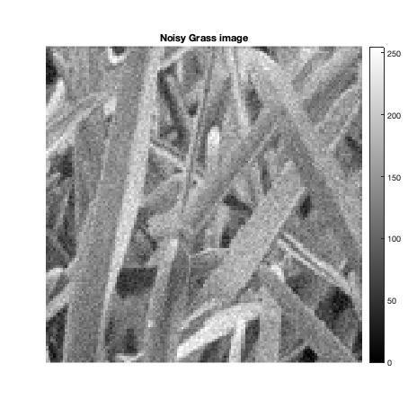
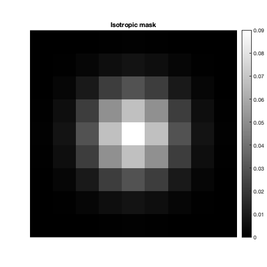
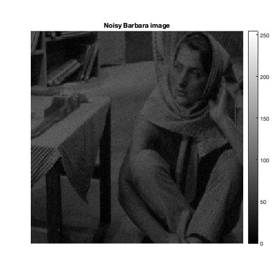
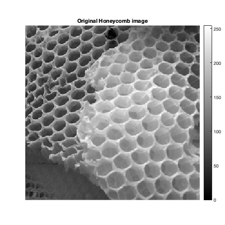

Contents
MyMainScript
clc; clear all; close all; warning('off', 'all'); tic;
CS 663: Digital Image Processing, IIT Bombay (Autumn 2020)
Aman Kansal, Ansh Khurana, Kushagra Juneja
Assignment 2, Question 3
Grass Image
im = imread("../data/grass.png"); im = double(im) ; noisy_im = myGaussianNoise(im); h = 13.5; [mask, filtered_im] = myPatchBasedFiltering(noisy_im, h); showBest('Grass', im, noisy_im, filtered_im, mask);
RMSD of noisy image = 11.823007 RMSD of filtered image = 7.438951 
Best values
% For grass image, h = 13.5 % optimal rmsd = 7.35 % 0.9*h -> rmsd = 7.79 % 1.1*h -> rmsd = 7.52 toc;
Elapsed time is 26.717334 seconds.
Barbara image
im = load("../data/barbara.mat"); im = double(im.imageOrig) ; im = myBlur(im); noisy_im = myGaussianNoise(im); h = 5.5; [mask, filtered_im] = myPatchBasedFiltering(noisy_im, h); showBest('Barbara', im, noisy_im, filtered_im, mask);
RMSD of noisy image = 4.731886 RMSD of filtered image = 2.707634
Best values
% Barbara, h = 5.5 % optimal rmsd = 2.69 % 0.9*h -> rmsd = 2.74 % 1.1*h -> rmsd = 2.73 toc;
Elapsed time is 118.812019 seconds.
Honeycomb image
im = imread("../data/honeyCombReal.png"); im = double(im) ; noisy_im = myGaussianNoise(im); h = 15.0; [mask, filtered_im] = myPatchBasedFiltering(noisy_im, h); showBest('Honeycomb', im, noisy_im, filtered_im, mask);
RMSD of noisy image = 12.690202 RMSD of filtered image = 7.603023
Best values
% Honeycomb, h = 15.0 % optimal rmsd = 7.54 % 0.9*h -> rmsd = 7.81 % 1.1*h -> rmsd = 7.75 toc;
Elapsed time is 212.298085 seconds.
Summary
% For grass image, h = 13.5 % optimal rmsd = 7.35 % 0.9*h -> rmsd = 7.79 % 1.1*h -> rmsd = 7.52 % Barbara, h = 5.5 % optimal rmsd = 2.69 % 0.9*h -> rmsd = 2.74 % 1.1*h -> rmsd = 2.73 % Honeycomb, h = 15.0 % optimal rmsd = 7.54 % 0.9*h -> rmsd = 7.81 % 1.1*h -> rmsd = 7.75 toc;
Elapsed time is 212.305369 seconds.